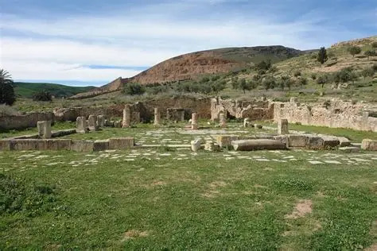
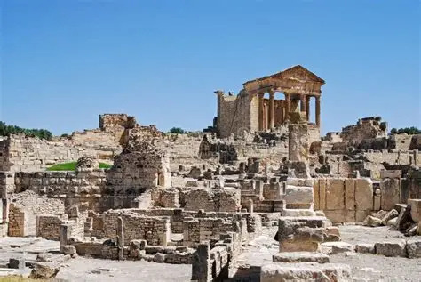
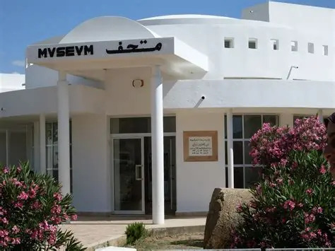

1. Bulla Regia — Jendouba

Bulla Regia est un ancien site archéologique situé près de Jendouba. Il est célèbre pour ses maisons romaines souterraines, construites pour se protéger de la chaleur. Le site possède également des mosaïques et plusieurs vestiges de l'époque romaine.
2. Dougga — Béja

Dougga est un important site archéologique situé dans le gouvernorat de Béja. Cette ancienne cité possède de nombreux monuments romains, notamment le célèbre Capitole, un théâtre et plusieurs temples.
3. Chemtou — Jendouba

Chemtou est un ancien site archéologique situé dans le gouvernorat de Jendouba. Il est notamment connu pour ses anciennes carrières de marbre jaune et pour les vestiges de la cité antique de Simitthus.